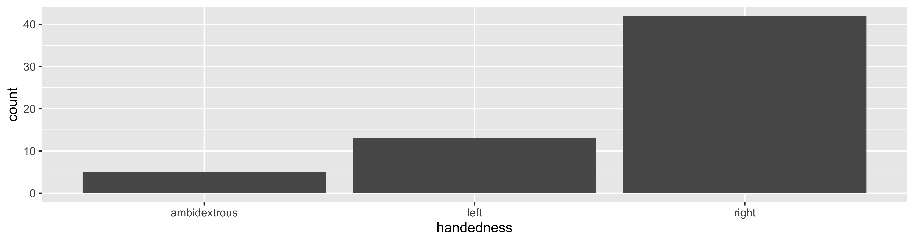

02-dplyr
Professor Shannon Ellis
10/5/23
Data Manipulation with dplyr
Q&A
Q: How many people are in a group for case studies and final project?
A: 3-4
Q: How to turn in assignments
A: We’ll discuss this today!
Q: Why don’t we have uniform keyboard-shortcut (like run code, new cell) for both R and Python and other coding environment?
A: Lack of communication? Preferences of developers? I think we’ll get there…
Q: Wasn’t clear about the ‘single quotes’ vs “double quotes” thing
A: When creating a string, or any time you need to use quotes in R, single and double quotes are interchangeable. R doesn’t care which you use. However, your code will be stylistically better if you consistently use one.
Q: What are useful libraries that we can use to analyze data?
A: We’ll be discussing lots, but the tidyverse packages (the first of which we’ll discuss is dplyr) is a great place to start. There are also different packages for basically every statistical analysis out there
Q: Is there any way to prevent coercion? / I was wondering if you can types cast a variable when concatenation
A: Yup. You can explicitly stateas._____()when creating a variable (i.e.as.character()) and when reading in data you can specify. You’ll find that R does a pretty good job at guessing, but we can always fix to what we want after the fact.
Q: What is the difference between mylist[1] and mylist[[1]]? It looked like class(mylist[1]) returned list and class(mylist[[1]]) returned the class of the element.
A: Double brackets returns the element directly. Single bracket (for lists) always returns a list.
Q: I’m curious about how to handle dataframes in R
A: Excellent - we’ll start this discussion today and continue throughout the quarter!
Course Announcements
Due Dates:
- Lab 01 due tomorrow (Friday; 11:59 PM)
- Student survey open until next Thursday
- HW01 and Lab02 will both be released Monday
- Lecture Participation survey “due” after class
Suggested Reading
R4DS:
- Chapter 5: Data Transformation
- Chapter 15: Factors
Agenda
dplyr- philosophy
- pipes
- common operations
Philosophy
dplyris a grammar of data manipulation, providing a consistent set of verbs that help you solve the most common data manipulation challenges
Pipes
The pipe in baseR
|>should be read as “and then”- for example “Wake up |> brush teeth” would be read as “wake up and then brush teeth”
Where does the name come from?
The pipe operator was first implemented in the package magrittr.


You will see this frequently in code online. It’s equivalent to |>.
Review: How does a pipe work?
- You can think about the following sequence of actions - find key, unlock car, start car, drive to school, park.
- Expressed as a set of nested functions in R pseudocode this would look like:
Data
To get started with lecture code: library(tidyverse)
NC DOT Fatal Crashes in North Carolina
From OpenDurham’s Data Portal
Variables
View the names of variables via
[1] "FID" "OBJECTID" "AmbulanceR" "BikeAge_Gr" "Bike_Age"
[6] "Bike_Alc_D" "Bike_Dir" "Bike_Injur" "Bike_Pos" "Bike_Race"
[11] "Bike_Sex" "City" "County" "CrashAlcoh" "CrashDay"
[16] "Crash_Date" "Crash_Grp" "Crash_Hour" "Crash_Loc" "Crash_Mont"
[21] "Crash_Time" "Crash_Type" "Crash_Ty_1" "Crash_Year" "Crsh_Sevri"
[26] "Developmen" "DrvrAge_Gr" "Drvr_Age" "Drvr_Alc_D" "Drvr_EstSp"
[31] "Drvr_Injur" "Drvr_Race" "Drvr_Sex" "Drvr_VehTy" "ExcsSpdInd"
[36] "Hit_Run" "Light_Cond" "Locality" "Num_Lanes" "Num_Units"
[41] "Rd_Charact" "Rd_Class" "Rd_Conditi" "Rd_Config" "Rd_Defects"
[46] "Rd_Feature" "Rd_Surface" "Region" "Rural_Urba" "Speed_Limi"
[51] "Traff_Cntr" "Weather" "Workzone_I" "Location" Viewing your data
In the Environment, click on the name of the data frame to view it in the data viewer (or use the
Viewfunction)Use the
glimpsefunction to take a peek
Rows: 5,716
Columns: 54
$ FID <dbl> 18, 29, 33, 35, 49, 53, 56, 60, 63, 66, 72, 75, 82, 84, 85,…
$ OBJECTID <dbl> 19, 30, 34, 36, 50, 54, 57, 61, 64, 67, 73, 76, 83, 85, 86,…
$ AmbulanceR <chr> "No", "Yes", "No", "Yes", "No", "Yes", "Yes", "No", "Yes", …
$ BikeAge_Gr <chr> NA, "50-59", NA, "16-19", NA, "50-59", "16-19", "40-49", "1…
$ Bike_Age <dbl> 6, 51, 10, 17, 6, 52, 18, 40, 6, 7, 45, 30, 17, 20, 14, 15,…
$ Bike_Alc_D <chr> "No", "No", "No", "No", "No", "No", "No", "No", "No", "No",…
$ Bike_Dir <chr> "Not Applicable", "With Traffic", "With Traffic", NA, "Faci…
$ Bike_Injur <chr> "C: Possible Injury", "C: Possible Injury", "Injury", "B: E…
$ Bike_Pos <chr> "Driveway / Alley", "Travel Lane", "Travel Lane", "Travel L…
$ Bike_Race <chr> "Black", "Black", "Black", "White", "Black", "White", "Blac…
$ Bike_Sex <chr> "Female", "Male", "Male", "Male", "Male", "Male", "Female",…
$ City <chr> "Durham", "Greenville", "Farmville", "Charlotte", "Charlott…
$ County <chr> "Durham", "Pitt", "Pitt", "Mecklenburg", "Mecklenburg", "Du…
$ CrashAlcoh <chr> "No", "No", "No", "No", "No", "No", "No", "No", "No", "No",…
$ CrashDay <chr> "01-01-06", "01-01-02", "01-01-07", "01-01-05", NA, NA, NA,…
$ Crash_Date <date> 2007-01-06, 2007-01-09, 2007-01-14, 2007-01-12, 2007-01-15…
$ Crash_Grp <chr> "Bicyclist Failed to Yield - Midblock", "Crossing Paths - O…
$ Crash_Hour <dbl> 13, 23, 16, 19, 12, 20, 19, 14, 16, 0, 17, 18, 14, 17, 19, …
$ Crash_Loc <chr> "Non-Intersection", "Intersection-Related", "Intersection",…
$ Crash_Mont <chr> NA, NA, NA, NA, NA, "01-04-01", "01-04-01", NA, "01-02-01",…
$ Crash_Time <dttm> 0001-01-01 13:17:58, 0001-01-01 23:08:58, 0001-01-01 16:44…
$ Crash_Type <chr> "Bicyclist Ride Out - Residential Driveway", "Crossing Path…
$ Crash_Ty_1 <dbl> 353311, 211180, 111144, 119139, 112114, 311231, 119144, 132…
$ Crash_Year <dbl> 2007, 2007, 2007, 2007, 2007, 2007, 2007, 2007, 2007, 2007,…
$ Crsh_Sevri <chr> "C: Possible Injury", "C: Possible Injury", "O: No Injury",…
$ Developmen <chr> "Residential", "Commercial", "Residential", "Residential", …
$ DrvrAge_Gr <chr> "60-69", "30-39", "50-59", "30-39", NA, "20-24", "40-49", N…
$ Drvr_Age <dbl> 66, 34, 52, 33, NA, 20, 40, NA, 17, 51, NA, 64, 50, 66, 30,…
$ Drvr_Alc_D <chr> "No", "No", "No", "No", "Missing", "No", "No", "Missing", "…
$ Drvr_EstSp <chr> "11-15 mph", "0-5 mph", "21-25 mph", "46-50 mph", "16-20 mp…
$ Drvr_Injur <chr> "O: No Injury", "O: No Injury", "O: No Injury", "O: No Inju…
$ Drvr_Race <chr> "Black", "Black", "White", "White", "/Missing", "White", "B…
$ Drvr_Sex <chr> "Male", "Male", "Female", "Female", NA, "Female", "Male", N…
$ Drvr_VehTy <chr> "Pickup", "Passenger Car", "Passenger Car", "Sport Utility"…
$ ExcsSpdInd <chr> "No", "No", "No", "No", "No", "No", "No", "No", "No", "No",…
$ Hit_Run <chr> "No", "No", "No", "No", "Yes", "No", "No", "Yes", "No", "No…
$ Light_Cond <chr> "Daylight", "Dark - Lighted Roadway", "Daylight", "Dark - R…
$ Locality <chr> "Mixed (30% To 70% Developed)", "Urban (>70% Developed)", "…
$ Num_Lanes <chr> "2 lanes", "5 lanes", "2 lanes", "4 lanes", "2 lanes", "4 l…
$ Num_Units <dbl> 2, 2, 2, 3, 2, 2, 2, 2, 2, 2, 2, 2, 2, 2, 2, 2, 2, 2, 2, 2,…
$ Rd_Charact <chr> "Straight - Level", "Straight - Level", "Straight - Level",…
$ Rd_Class <chr> "Local Street", "Local Street", "Local Street", "NC Route",…
$ Rd_Conditi <chr> "Dry", "Dry", "Dry", "Dry", "Dry", "Dry", "Dry", "Dry", "Dr…
$ Rd_Config <chr> "Two-Way, Not Divided", "Two-Way, Divided, Unprotected Medi…
$ Rd_Defects <chr> "None", "None", "None", "None", "None", "None", "None", "No…
$ Rd_Feature <chr> "No Special Feature", "Four-Way Intersection", "Four-Way In…
$ Rd_Surface <chr> "Smooth Asphalt", "Smooth Asphalt", "Smooth Asphalt", "Smoo…
$ Region <chr> "Piedmont", "Coastal", "Coastal", "Piedmont", "Piedmont", "…
$ Rural_Urba <chr> "Urban", "Urban", "Rural", "Urban", "Urban", "Urban", "Urba…
$ Speed_Limi <chr> "20 - 25 MPH", "40 - 45 MPH", "30 - 35 MPH", "40 - 45 M…
$ Traff_Cntr <chr> "No Control Present", "Stop And Go Signal", "Stop Sign", "S…
$ Weather <chr> "Clear", "Clear", "Clear", "Cloudy", "Clear", "Clear", "Cle…
$ Workzone_I <chr> "No", "No", "No", "No", "No", "No", "No", "No", "No", "No",…
$ Location <chr> "36.002743, -78.8785", "35.612984, -77.39265", "35.595676, …dplyr
A Grammar of Data Manipulation
dplyr is based on the concepts of functions as verbs that manipulate data frames.
Single data frame functions / verbs:
filter: pick rows matching criteriaslice: pick rows using index(es)select: pick columns by namepull: grab a column as a vectorrename: rename specific columnsarrange: reorder rowsmutate: add new variablestransmute: create new data frame with variablesdistinct: filter for unique rowssample_n/sample_frac: randomly sample rowssummarize: reduce variables to values- … (many more)
dplyr rules for functions
First argument is always a data frame
Subsequent arguments say what to do with that data frame
Always return a data frame
Do not modify in place
Performance via lazy evaluation
Filter rows with filter
- Select a subset of rows in a data frame.
- Easily filter for many conditions at once.
filter
for crashes in Durham County
# A tibble: 253 × 54
FID OBJECTID AmbulanceR BikeAge_Gr Bike_Age Bike_Alc_D Bike_Dir Bike_Injur
<dbl> <dbl> <chr> <chr> <dbl> <chr> <chr> <chr>
1 18 19 No <NA> 6 No Not Appl… C: Possib…
2 53 54 Yes 50-59 52 No With Tra… A: Disabl…
3 56 57 Yes 16-19 18 No <NA> C: Possib…
4 209 210 No 16-19 16 No Facing T… C: Possib…
5 228 229 Yes 40-49 40 No With Tra… B: Eviden…
6 620 621 Yes 50-59 55 No With Tra… B: Eviden…
7 667 668 Yes 60-69 61 No Not Appl… B: Eviden…
8 458 459 Yes 60-69 62 No With Tra… B: Eviden…
9 576 577 No 40-49 49 No With Tra… C: Possib…
10 618 619 No 20-24 23 No With Tra… C: Possib…
# ℹ 243 more rows
# ℹ 46 more variables: Bike_Pos <chr>, Bike_Race <chr>, Bike_Sex <chr>,
# City <chr>, County <chr>, CrashAlcoh <chr>, CrashDay <chr>,
# Crash_Date <date>, Crash_Grp <chr>, Crash_Hour <dbl>, Crash_Loc <chr>,
# Crash_Mont <chr>, Crash_Time <dttm>, Crash_Type <chr>, Crash_Ty_1 <dbl>,
# Crash_Year <dbl>, Crsh_Sevri <chr>, Developmen <chr>, DrvrAge_Gr <chr>,
# Drvr_Age <dbl>, Drvr_Alc_D <chr>, Drvr_EstSp <chr>, Drvr_Injur <chr>, …filter
for crashes in Durham County where biker was < 10 yrs old
# A tibble: 20 × 54
FID OBJECTID AmbulanceR BikeAge_Gr Bike_Age Bike_Alc_D Bike_Dir Bike_Injur
<dbl> <dbl> <chr> <chr> <dbl> <chr> <chr> <chr>
1 18 19 No <NA> 6 No Not Appl… C: Possib…
2 47 48 No 10-Jun 9 No Not Appl… O: No Inj…
3 124 125 Yes 10-Jun 8 No With Tra… C: Possib…
4 531 532 Yes 10-Jun 7 No With Tra… C: Possib…
5 704 705 Yes 10-Jun 9 No Not Appl… C: Possib…
6 42 43 No 10-Jun 8 No With Tra… O: No Inj…
7 392 393 Yes 0-5 2 No Not Appl… B: Eviden…
8 941 942 No 10-Jun 9 No With Tra… C: Possib…
9 436 437 Yes 10-Jun 6 No Not Appl… O: No Inj…
10 160 161 Yes 10-Jun 7 No With Tra… C: Possib…
11 273 274 Yes 10-Jun 7 No Facing T… C: Possib…
12 78 79 Yes 10-Jun 7 No With Tra… C: Possib…
13 422 423 No 10-Jun 9 No Not Appl… O: No Inj…
14 570 571 No <NA> 0 Missing Not Appl… Injury
15 683 684 Yes 10-Jun 8 No Not Appl… C: Possib…
16 62 63 Yes 10-Jun 7 No With Tra… C: Possib…
17 248 249 No 0-5 4 No Not Appl… O: No Inj…
18 306 307 Yes 10-Jun 8 No With Tra… C: Possib…
19 231 232 Yes 10-Jun 8 No With Tra… C: Possib…
20 361 362 Yes 10-Jun 9 No With Tra… B: Eviden…
# ℹ 46 more variables: Bike_Pos <chr>, Bike_Race <chr>, Bike_Sex <chr>,
# City <chr>, County <chr>, CrashAlcoh <chr>, CrashDay <chr>,
# Crash_Date <date>, Crash_Grp <chr>, Crash_Hour <dbl>, Crash_Loc <chr>,
# Crash_Mont <chr>, Crash_Time <dttm>, Crash_Type <chr>, Crash_Ty_1 <dbl>,
# Crash_Year <dbl>, Crsh_Sevri <chr>, Developmen <chr>, DrvrAge_Gr <chr>,
# Drvr_Age <dbl>, Drvr_Alc_D <chr>, Drvr_EstSp <chr>, Drvr_Injur <chr>,
# Drvr_Race <chr>, Drvr_Sex <chr>, Drvr_VehTy <chr>, ExcsSpdInd <chr>, …Aside: real data is messy!
What in the world does a BikeAge_gr of 10-Jun or 15-Nov mean?
Careful data scientists clean up their data first!
- We’re going to need to do some text parsing to clean up these data
10-Junshould be6-1015-Novshould be11-15
Correct and overwrite mutate
- Remember we want to do the following in the
BikeAge_Grvariable10-Junshould be6-1015-Novshould be11-15
- Note that we’re overwriting existing data and columns, so be careful!
- But remember, it’s easy to revert if you make a mistake since we didn’t touch the raw data, we can always reload it and start over
Check before you move on
Always check your changes and confirm code did what you wanted it to do
mutate to add new variables
How is the new alcohol variable determined?
“Save” when you mutate
Most often when you define a new variable with mutate you’ll also want to save the resulting data frame, often by writing over the original data frame.
transmute to create a new dataset
You’ll use this much less often than mutate but when you need it, you need it.
mutate vs. transmute
mutateadds new and keeps originaltransmuteadds new; drops existing
Your Turn
How many accidents in our dataset required an ambulance ride (AmbulanceR) and had the Crash_Type “Bicyclist Lost Control - Mechanical Problems”?
slice for certain row numbers
First five
# A tibble: 5 × 54
FID OBJECTID AmbulanceR BikeAge_Gr Bike_Age Bike_Alc_D Bike_Dir Bike_Injur
<dbl> <dbl> <chr> <chr> <dbl> <chr> <chr> <chr>
1 18 19 No <NA> 6 No Not Appli… C: Possib…
2 29 30 Yes 50-59 51 No With Traf… C: Possib…
3 33 34 No <NA> 10 No With Traf… Injury
4 35 36 Yes 16-19 17 No <NA> B: Eviden…
5 49 50 No <NA> 6 No Facing Tr… O: No Inj…
# ℹ 46 more variables: Bike_Pos <chr>, Bike_Race <chr>, Bike_Sex <chr>,
# City <chr>, County <chr>, CrashAlcoh <chr>, CrashDay <chr>,
# Crash_Date <date>, Crash_Grp <chr>, Crash_Hour <dbl>, Crash_Loc <chr>,
# Crash_Mont <chr>, Crash_Time <dttm>, Crash_Type <chr>, Crash_Ty_1 <dbl>,
# Crash_Year <dbl>, Crsh_Sevri <chr>, Developmen <chr>, DrvrAge_Gr <chr>,
# Drvr_Age <dbl>, Drvr_Alc_D <chr>, Drvr_EstSp <chr>, Drvr_Injur <chr>,
# Drvr_Race <chr>, Drvr_Sex <chr>, Drvr_VehTy <chr>, ExcsSpdInd <chr>, …slice for certain row numbers
Last five
# A tibble: 5 × 54
FID OBJECTID AmbulanceR BikeAge_Gr Bike_Age Bike_Alc_D Bike_Dir Bike_Injur
<dbl> <dbl> <chr> <chr> <dbl> <chr> <chr> <chr>
1 460 461 Yes 6-10 7 No Not Appli… C: Possib…
2 474 475 Yes 50-59 50 No With Traf… B: Eviden…
3 479 480 Yes 16-19 16 No Not Appli… C: Possib…
4 487 488 No 40-49 47 Yes With Traf… C: Possib…
5 488 489 Yes 30-39 35 No Facing Tr… C: Possib…
# ℹ 46 more variables: Bike_Pos <chr>, Bike_Race <chr>, Bike_Sex <chr>,
# City <chr>, County <chr>, CrashAlcoh <chr>, CrashDay <chr>,
# Crash_Date <date>, Crash_Grp <chr>, Crash_Hour <dbl>, Crash_Loc <chr>,
# Crash_Mont <chr>, Crash_Time <dttm>, Crash_Type <chr>, Crash_Ty_1 <dbl>,
# Crash_Year <dbl>, Crsh_Sevri <chr>, Developmen <chr>, DrvrAge_Gr <chr>,
# Drvr_Age <dbl>, Drvr_Alc_D <chr>, Drvr_EstSp <chr>, Drvr_Injur <chr>,
# Drvr_Race <chr>, Drvr_Sex <chr>, Drvr_VehTy <chr>, ExcsSpdInd <chr>, …select to keep only the variables you mention
or select to exclude variables
# A tibble: 5,716 × 53
FID AmbulanceR BikeAge_Gr Bike_Age Bike_Alc_D Bike_Dir Bike_Injur Bike_Pos
<dbl> <chr> <chr> <dbl> <chr> <chr> <chr> <chr>
1 18 No <NA> 6 No Not Appl… C: Possib… Drivewa…
2 29 Yes 50-59 51 No With Tra… C: Possib… Travel …
3 33 No <NA> 10 No With Tra… Injury Travel …
4 35 Yes 16-19 17 No <NA> B: Eviden… Travel …
5 49 No <NA> 6 No Facing T… O: No Inj… Travel …
6 53 Yes 50-59 52 No With Tra… A: Disabl… Travel …
7 56 Yes 16-19 18 No <NA> C: Possib… Travel …
8 60 No 40-49 40 No Facing T… B: Eviden… Sidewal…
9 63 Yes 6-10 6 No Facing T… B: Eviden… Travel …
10 66 Yes 6-10 7 No <NA> B: Eviden… Non-Roa…
# ℹ 5,706 more rows
# ℹ 45 more variables: Bike_Race <chr>, Bike_Sex <chr>, City <chr>,
# County <chr>, CrashAlcoh <chr>, CrashDay <chr>, Crash_Date <date>,
# Crash_Grp <chr>, Crash_Hour <dbl>, Crash_Loc <chr>, Crash_Mont <chr>,
# Crash_Time <dttm>, Crash_Type <chr>, Crash_Ty_1 <dbl>, Crash_Year <dbl>,
# Crsh_Sevri <chr>, Developmen <chr>, DrvrAge_Gr <chr>, Drvr_Age <dbl>,
# Drvr_Alc_D <chr>, Drvr_EstSp <chr>, Drvr_Injur <chr>, Drvr_Race <chr>, …or select a range of variables
# A tibble: 5,716 × 7
OBJECTID AmbulanceR BikeAge_Gr Bike_Age Bike_Alc_D Bike_Dir Bike_Injur
<dbl> <chr> <chr> <dbl> <chr> <chr> <chr>
1 19 No <NA> 6 No Not Applicable C: Possibl…
2 30 Yes 50-59 51 No With Traffic C: Possibl…
3 34 No <NA> 10 No With Traffic Injury
4 36 Yes 16-19 17 No <NA> B: Evident…
5 50 No <NA> 6 No Facing Traffic O: No Inju…
6 54 Yes 50-59 52 No With Traffic A: Disabli…
7 57 Yes 16-19 18 No <NA> C: Possibl…
8 61 No 40-49 40 No Facing Traffic B: Evident…
9 64 Yes 6-10 6 No Facing Traffic B: Evident…
10 67 Yes 6-10 7 No <NA> B: Evident…
# ℹ 5,706 more rowspull to extract a column as a vector
[1] "36.002743, -78.8785" "35.612984, -77.39265" "35.595676, -77.59074"
[4] "35.076767, -80.7728" "35.19999, -80.75713" "35.966644, -78.96749"The two pulls in your lives

Don’t get
pullhappy when wrangling data! Only extract out variables if you truly need to, otherwise keep in data frame.But always ⬇️
Pullbefore starting your work when collaborating on GitHub.
rename specific columns
Useful for correcting typos, and renaming to make variable names shorter and/or more informative
- Original names:
[1] "FID" "OBJECTID" "AmbulanceR" "BikeAge_Gr" "Bike_Age"
[6] "Bike_Alc_D" "Bike_Dir" "Bike_Injur" "Bike_Pos" "Bike_Race"
[11] "Bike_Sex" "City" "County" "CrashAlcoh" "CrashDay"
[16] "Crash_Date" "Crash_Grp" "Crash_Hour" "Crash_Loc" "Crash_Mont"
[21] "Crash_Time" "Crash_Type" "Crash_Ty_1" "Crash_Year" "Crsh_Sevri"
[26] "Developmen" "DrvrAge_Gr" "Drvr_Age" "Drvr_Alc_D" "Drvr_EstSp"
[31] "Drvr_Injur" "Drvr_Race" "Drvr_Sex" "Drvr_VehTy" "ExcsSpdInd"
[36] "Hit_Run" "Light_Cond" "Locality" "Num_Lanes" "Num_Units"
[41] "Rd_Charact" "Rd_Class" "Rd_Conditi" "Rd_Config" "Rd_Defects"
[46] "Rd_Feature" "Rd_Surface" "Region" "Rural_Urba" "Speed_Limi"
[51] "Traff_Cntr" "Weather" "Workzone_I" "Location" rename specific columns
- Rename
Speed_LimitoSpeed_Limit:
Check before you move on
Always check your changes and confirm code did what you wanted it to do
[1] "FID" "OBJECTID" "AmbulanceR" "BikeAge_Gr" "Bike_Age"
[6] "Bike_Alc_D" "Bike_Dir" "Bike_Injur" "Bike_Pos" "Bike_Race"
[11] "Bike_Sex" "City" "County" "CrashAlcoh" "CrashDay"
[16] "Crash_Date" "Crash_Grp" "Crash_Hour" "Crash_Loc" "Crash_Mont"
[21] "Crash_Time" "Crash_Type" "Crash_Ty_1" "Crash_Year" "Crsh_Sevri"
[26] "Developmen" "DrvrAge_Gr" "Drvr_Age" "Drvr_Alc_D" "Drvr_EstSp"
[31] "Drvr_Injur" "Drvr_Race" "Drvr_Sex" "Drvr_VehTy" "ExcsSpdInd"
[36] "Hit_Run" "Light_Cond" "Locality" "Num_Lanes" "Num_Units"
[41] "Rd_Charact" "Rd_Class" "Rd_Conditi" "Rd_Config" "Rd_Defects"
[46] "Rd_Feature" "Rd_Surface" "Region" "Rural_Urba" "Speed_Limit"
[51] "Traff_Cntr" "Weather" "Workzone_I" "Location" Your Turn
Your boss in Cumberland County gets overwhelmed by data easily, but he wants some data from you. He wants all bike accidents from his County, but he only wants to know the road’s speed limit, the age of the biker, and to know if alcohol was involved. If you have time, mine as well make the column names very clear to your boss while you’re at it…
summarize to reduce variables to values
The values are summarized in a data frame
and arrange to order rows
count to group by then count
# A tibble: 13 × 2
BikeAge_Gr n
<chr> <int>
1 0-5 60
2 11-15 747
3 16-19 605
4 20-24 680
5 25-29 430
6 30-39 658
7 40-49 920
8 50-59 739
9 6-10 421
10 60-69 274
11 70 12
12 70+ 58
13 <NA> 112If you wanted to arrange these in ascending order what would you add to the pipe?
Select rows with sample_n or sample_frac
sample_n: randomly sample 5 observations
sample_frac: randomly sample 20% of observations
distinct to filter for unique rows
# A tibble: 360 × 2
County City
<chr> <chr>
1 Alamance Alamance
2 Alamance Burlington
3 Alamance Elon College
4 Alamance Gibsonville
5 Alamance Graham
6 Alamance Green Level
7 Alamance Mebane
8 Alamance None - Rural Crash
9 Alexander None - Rural Crash
10 Alleghany None - Rural Crash
# ℹ 350 more rowsdistinct has a .keep_all parameter
# A tibble: 360 × 54
FID OBJECTID AmbulanceR BikeAge_Gr Bike_Age Bike_Alc_D Bike_Dir Bike_Injur
<dbl> <dbl> <chr> <chr> <dbl> <chr> <chr> <chr>
1 524 525 Yes 11-15 12 No <NA> B: Eviden…
2 84 85 Yes 20-24 20 No With Tra… B: Eviden…
3 571 572 Yes 16-19 16 No Not Appl… B: Eviden…
4 509 510 Yes 40-49 43 Yes With Tra… K: Killed
5 855 856 Yes 30-39 30 No With Tra… A: Disabl…
6 5 6 Yes 40-49 44 Yes With Tra… C: Possib…
7 163 164 Yes 30-39 35 No Not Appl… C: Possib…
8 96 97 Yes 30-39 36 No With Tra… C: Possib…
9 46 47 Yes 50-59 53 No With Tra… B: Eviden…
10 485 486 Yes 60-69 62 No With Tra… C: Possib…
# ℹ 350 more rows
# ℹ 46 more variables: Bike_Pos <chr>, Bike_Race <chr>, Bike_Sex <chr>,
# City <chr>, County <chr>, CrashAlcoh <chr>, CrashDay <chr>,
# Crash_Date <date>, Crash_Grp <chr>, Crash_Hour <dbl>, Crash_Loc <chr>,
# Crash_Mont <chr>, Crash_Time <dttm>, Crash_Type <chr>, Crash_Ty_1 <dbl>,
# Crash_Year <dbl>, Crsh_Sevri <chr>, Developmen <chr>, DrvrAge_Gr <chr>,
# Drvr_Age <dbl>, Drvr_Alc_D <chr>, Drvr_EstSp <chr>, Drvr_Injur <chr>, …Factors
Factors
Factor objects are how R stores data for categorical variables (fixed numbers of discrete values).
Returning to: Cat lovers
Reading in the cat-lovers data…
Read data in as character strings
But coerce when plotting
Use forcats to manipulate factors
forcats functionality 
R uses factors to handle categorical variables, variables that have a fixed and known set of possible values. Historically, factors were much easier to work with than character vectors, so many base R functions automatically convert character vectors to factors.
factors are still useful when you have true categorical data, and when you want to override the ordering of character vectors to improve display. The goal of the forcats package is to provide a suite of useful tools that solve common problems with factors.
Recap
- Understand the basic tenants of
dplyr - Describe and utilize the pipe in workflows
- Describe and use common
verbs(functions) - Understand the documentation for
dplyrfunctions - Understand what factors are an that
forcatsis a package with functionality for working with them